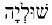
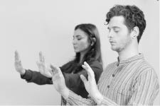
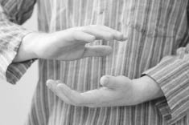
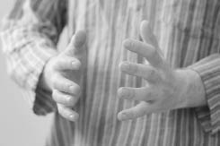

ADIM IV: “Kİ” ENERJİSİ İÇİNDEKİ USTAYLA TANIŞMA ZAMANI Kİ ENERJİSİ NEDİR?
Var olan her şeyin yapıtaşıdır! Yaşamın enerjisidir...
Fizikte her şeyin yapıtaşı olarak bildiğimiz “atom” ve “atom altı parçacıkları” da aslında birer “ki” bulutudur.
“Ki”nin enerji formlarıyla; maddeleri, bedenleri, hisleri, hormonları, yaşantımızı ve bütün dünyayı var ederiz.
Gördüğün her şey “Kİ” enerjisidir...
Japonya’da “Ki”, Çin’de “Qi” olarak karşımıza çıkan yaşamın enerjisi, Hindistan’da “Prana”, Mısır’da “Ka” ya da “Kelam” eski Türkçede de “Tin” adını alır.
Ben kitap boyunca yaşamın enerjisine sadece “Ki” demeye devam edeceğim. Bence isminin ne olması gerektiği konusunda sen de çok kafa yormamalısın. Önemli olan uygun isimi bulmak değil, yaşamın enerjisini duymak ve onu yönlendirmektir.
“Ki” enerjisi dediğimde aklına “Rei-ki”yle bağlantısı olup olmadığı düşüncesi geliyorsa, kurduğun bağlantının anlamsız olduğunu söyleyemesem de yetersiz olduğunu belirtmeliyim.
Benim sana anlatıp, hissetmeyi ve yönlendirerek kullanmayı öğreteceğim “Ki” enerjisi, evren pastasının tamamıyken, senin aklına gelen “Rei-ki” bu evren pastasının sadece ince bir dilimidir!
Var olan bütün teknikler, yaratıcısının sınırlarını içerir. Bu teknikler ile sadece tek bir radyo istasyonunu dinleyebilirsin. Ben sana var olan bütün frekanslara kendini açmayı teklif ediyorum.
“Rei-ki” eğitimimi tamamlayıp dersin hocası olmam sekiz buçuk senemi almış üstelik de son üç yılını günde altı saat çalışarak geçirmiştim. Evren pastasının o bir dilimi için harcanan emeğin sekiz buçuk yıllık bir çalışma ve disiplin gerektirdiğini düşünürsek, pasta ustası olmak için kat edilmesi gereken yolu bence sen hesapla! Lütfen hormonlu hocalardan biri olma. Kısa sürede eğitmen olan o hormonlu hocaların farkındalıkları da mutlulukları da gerçek olamaz. Lütfen sen de bu konuda aceleci olma. Çıraklıktan ustalığa doğru, bir yaşam dolusu zamanın var.
Şimdi sana öğreteceğim basit ve herkes tarafından uygulanabilir tekniklerle “Ki enerjisi”ni hissetmeye ve hatta onu yönlendirmeye bile başlayacaksın. Bu tekniklere ayıracağın zaman ve içine koyacağın “AŞK”, senin ve hayatının dönüştüğü mucizeyi yaratacaktır.
– Metin, aşkın istilası hayatlarımızda ne zaman başlayacak?
– Hemen şimdi...
– Peki bu istila ne zaman tamamlanacak?
– Onun kararını sen vereceksin!
“Kİ” ENERJİSİNİ YÖNLENDİRMEK VE AVUÇ
iÇLERİNDEKİ ENERJİ MERKEZLERİNİ
AKTİVE ETMEK:
“Ki” enerjisini yönlendirmenin binlerce tekniği olduğu halde ben sana en yumuşak ve kolay uygulanabilen ve daha önce öğrendiğin sufi nefesiyle uyumlanabilen bir Uzakdoğu yöntemini anlatacağım.
Sufi nefesiyle Anadolu’dan çıkıp bu kez Uzakdoğu’ya gidiyor oluşumuzdan alman gereken tek mesaj; evrenselliğin esas olduğudur.
Uzakdoğu’da nefesle yapılan iki türlü “Ki” yönlendirme şekli vardır:
1. Tahta ya da kiremit kırarken bağırmalarıyla vuruşları aynı hızda senkronize olan sporcuları görmüşsündür. Bu yaptıkları şeyle amaçları kiremitleri korkutmak olmadığına göre, aslında bağırarak verdikleri sert nefesle hedefledikleri şey, bedendeki enerjiyi temas edecek noktaya yollamaktır. Kitabımızın konusu bu değil.
2. Benim anlatacağım teknik de yine nefesle başlayan ancak daha yumuşak ve sakin bir egzersiz: Avuç içlerinden nefes üflemek!
Bedendeki tek enerji merkezi avuç içleri değildir. Ancak kullanım açısından daha kolay ve fonksiyonel olduğu için genelde ellerdeki enerji merkezleri uygun bulunur. Migren rahatsızlığıyla gelen bir hastaya şifa verirken ayaklarımdaki enerji merkezlerini onun yüzüne dayamaktansa ben genelde ellerimi kullanmayı tercih ediyorum.
Avuç içlerindeki enerji merkezlerini açmanın en etkili yöntemlerinden biri, burundan aldığın nefesi her iki kolunda da dolaştırıp, onu avuç içlerinden dışarıya doğru üflediğini hayal etmektir.
Şaşkınlıktan gözlerinin büyüdüğünün farkındaydım...
Söylemesi çok kolay ancak yapması imkânsız gibi geliyor biliyorum! Fakat bu konuda tamamen haksızsın. Seni temin ederim ki zihninin bütün direnişine rağmen, sadece birkaç denemeden sonra bile avuç içlerinden nefes verebilmenin en az söylemesi kadar kolay olduğunu deneyimleyeceksin.
Burada önemli olan şeyin hayal edebilme gücün olduğunu anlamalısın:
Hayal gücünü kaybettiğinde ölürsün!
Unutma sen de “O”nun hayalisin...
Ve
Hayallerin bittiği yerde, yanılsamalar başlar!
– Metin çok hayalperestsin, artık gerçek dünyaya dön!
– Bu dediğini bir kez daha düşünmeni öneririm. Gerçeği hayalin hamuruyla yoğurursun. Hayal hamuru sertleştiğinde, “gerçek” oluşur.
AVUÇ İÇLERİNDEN
NEFES ÜFLEME EGZERSİZİ NASIL YAPILIR?

Burnundan derin nefes al ve bu nefesi sol omzundan itibaren kolundan geçirerek bileklerine taşıyıp avuç içlerinden dışarıya sakince üflediğini zihninde canlandır! Nefesini nereye yolladığını hayal edersen, enerjin oraya gider!
• Nefesini içinde tutup, avuç içlerinden çıkarmaya çalışma!
• Egzersiz boyunca derin ve dingin nefesler almaya özen göster.
• Yatarak da yapabileceğin halde ilk zamanlarda oturarak ve ellerini karşında duran bir cisme dokunmaya hazır gibi açık tutarak yapmalısın. Kolunun yorulduğunu hissedersen ellerini avuç içlerin yukarı bakacak şekilde dizlerinin üzerine koyarak da çalışabilirsin.
• Önce sol elini kaldırarak egzersizi yapmaya başla. Beş dakikanın ardından sağ kolunu da çalışmana katarak toplam on dakika boyunca bu tekniği uygula. Zaman içinde ustalaştıkça egzersize her iki elinle de başlayabilirsin.
• Avuç içlerini biraz gergin tutmaya dikkat et. Ellerini sertçe germen avuç içlerinde his belirmesini zora sokar.
• Nefes alıp verirken avuç içlerinde his belirmesi için kendini zorlama, sadece bedeninde olan biteni sakince dinle.
• Bu çalışmayı günde on dakika boyunca hatta dilersen sufi nefesi egzersiziyle birlikte uyumlayarak yap.
• Egzersize, başaramayacağını düşünerek başlama!
Şunu lütfen unutma:
Nefesini nereye yolladığını hayal edersen, enerjin oraya gider!
Dolayısıyla bu noktada “nefes ve “soluk” arasındaki farkı doğru anlaman çok önemli.
Nefesle soluk iki ayrı şeydir.
“Soluk” burundan veya ağızdan alınıp yine burundan veya ağızdan verilerek bedenin oksijen ihtiyacını tedarik etmekle ilgiliyken, “nefes” ise işin enerji kısmıdır.
“Nefes” konusunu açıklarken onun aslında “ruh” demek olduğunu anlattığımı hatırla lütfen!
Egzersizden sonra:
• Egzersiz sırasında avuç içlerinde hiçbir his belirmediğini söyleyebilirsin. Ancak bu yine de senin nefes üflemediğin anlamına gelmez. Nefesini nereye üflediğini hayal edersen, zaten enerjini oraya yollamışsındır. Henüz duyamadığın hislerden dolayı yetersiz olduğunu ya da uygulamayı yanlış yaptığını düşünme. Sadece avuç içlerini çalıştırmaya istikrarla devam et.
• Avuç içlerinde sıcaklık, serinlik, karıncalanma, manyetik alan, çekilme, gerilme, esinti, uyuşma veya bunların dışında herhangi bir his deneyimlediysen her şey yolunda demektir.
• Her egzersizde ellerinde farklı hisler uyanabilir. Bu farklılıklar, egzersizi yanlış yaptığın ya da yapamadığın anlamına gelmez. “Ki” enerjisi her denemede zaten değişmeye devam edecektir. Örneğin, bugün ellerinde sıcaklık hissederken, diğer günler serinlik duyabilirsin. Hatta mevcut kelimelerinle tanımlayamayacağın hisler de deneyimliyor olabilirsin.
• Sağ ve sol ellerinde aynı hislerin belirmesini bekleme. Evrende sağı ve solu aynı olan hiçbir şey yoktur. Simetri evrende olmayan bir şeydir. Bu yüzden sağ ve sol tarafının aynı egzersiz içinde duyduğu hisler bambaşka olabilir. Sağında ve solunda farklı blokajlar söz konusu olabileceğinden, farklı yoğunluklar ve çözülmeler hissedebilirsin.
• Birkaç gün denediğin halde avuç içlerinde his belirmediyse enerjini ve yeteneklerini sorgulama. Zihnin, yaşadığın duruma fazla direnç gösterdiğinden yüksek olasılıkla deneyimlediğin şeyleri algılayamıyorsundur. Çalışmalarına istikrarla devam ettiğinde sana avuç içlerinde his belireceğinin garantisini veriyorum. Dolayısıyla, Uzakdoğu’da ustaların onlarca yıl uyguladığı bu teknikleri sadece üç saniye deneyip de kendinden ve yapabileceklerinden vazgeçme.
• Şu an elinde tuttuğun kitabı hissetmek için konsantre olmaya ihtiyaç duymadığın gibi, avuç içlerinden verdiğin nefesi duymak için de özel bir çaba gösterme. Nasıl elinde bir kitap varsa ve sen onu özel bir çaba göstermeden hissedebiliyorsan, aynı şekilde avuçlarının içinde de bir enerji var ve tam da orada duruyor...
Sadece hisset!
Dinle...
Hepsi bu...
Düşündüğün her şey bir yanılsamayken,
hissettiğin her şey hakikattir...
Ellerinde his belirmediği sürece, neden belirmediği konusunda kendini eksiklikle ya da yetersizlikle yargılayıp durma. Aslında yaptığın tek yanlış “Neden yapamadım?” sorusunu sormandır. Gözlerini kapayıp, sakince nefesini avuç içlerinden üflediğini hayal ettiğinde zaten başarmış olacaksın. Sana sürekli yapamadığını, yapamayacağını, ellerinde en ufak bir his dahi belirmediğini hatta bunun mümkün olamayacağını, o duyduğun karıncalanmaların, uyuşmaların bile egzersizinle hiç ilgisi olmadığını söyleyip duran “zihnini” sustur ve nefesini avuç içlerinden verdiğini hayal et.
Ben bu egzersizi 12 yıldır yapıyorum ve şu ana kadar 50 bin kişiyle de paylaştım. Avuçlarının içinde Kızıldeniz’in yarılmasını, alevlerin fışkırmasını, fırtınaların kopmasını falan bekleme. Hissedeceğin küçücük uyuşmalar, karıncalanmalar, en hafif basınç ya da sıcaklık-soğukluk hissi bile senin “Ki” enerjisini hissettiğin andır ve benden yana geçer not almana kâfidir.
Eğitimlerim sırasında, defalarca denediği halde avuç içlerinde hiçbir his belirmediğinden yakınan bir öğrencime bu egzersizi yaparken ne yaşadığını sorduğumda “Metin Bey günlerdir çalışıyorum ama maalesef hiçbir şey hissetmiyorum. Sadece bazen ellerim biraz uyuşuyor, bazen de sanki karıncalanıyor gibi ama bir şey olduğu yok” dedi. Elinde hissetmesi gereken veriler zaten bunlardı. “Sen nasıl bir deneyim yaşamayı hayal ediyordun ki?” diye sorduğumda “Ne bileyim öyle doğaüstü bir şeyler hissetmedim işte” cevabını verdi. Öğrencim, hislerini zihninin hapishanesine o kadar güçlü kapatmıştı ki yaşadığı hiçbir tecrübeyi duyup dinlemeyerek sadece zihnin öngördüğü tecrübelere odaklandığından aslında gayet iyi hissettiği “Ki”nin farkında bile değildi.
Bu çalışmayı ben yaptığımda ne mi hissediyorum?
Doğrusunu söylemek gerekirse hiçbir şey hissetmiyorum, çünkü yaşam enerjisini hissedip yönlendirmek benim hayatımın olağan hali. Avuç içlerimden nefes vermek, burnumdan solumak kadar net, açık ve normal bir deneyim. “Ki”nin farkında olduğumu söylemek, yürüdüğüm zemini hissettiğimi açıklamak kadar aptalca benim için. “Ki” enerjisini duyularla algılamak bende çabasızca ve otomatikman cereyan eden bir tecrübe. İçimde havai fişeklerin patladığını da söyleyemeyeceğim çünkü yaşamımın normali, bu enerjinin farkında olup onunla uyumlanarak var olmak.
Bir süre sonra sen de, “Ki”yi hissedip ona şekil verirken bunu çabasızca, kendiliğinden ve hayatının olağan hali gibi yaşıyor olacaksın.
Bu deneyimler sırasında duygularının ya da duyularınla hissettiklerinin seni ulaştıracağı noktada yaşadığın tecrübeyi var olan kelimelerle ifade etmen mümkün olmayabilir. Yaptığın ve yaşadığın bu şeyi, başkasına günlük hayatında kullandığın kelimelerden seçeceğin cümlelerle anlatamayabilirsin. Bunu denediğinde senin saçmaladığını bile söyleyebilirler...
Çocukluk yıllarımdan beri kendi yolculuğumda bazı şeyleri keşfetme sürecim genelde, çevremdeki çok insanın saçmaladığımı düşünüp durmalarıyla geçti...
Adada arkadaşlarımla saklambaç oynarken kilise çevresindeki girintili çıkıntılı alanlara saklanan çocukları, bulunduğum yerden bile kımıldamadan bakar bakmaz gördüğümde arkadaşlarım yaptığım şeye çok kızardı. Yerlerinin bulunamayacağını, onları görmediğim halde, gördüğümü iddia edip oyunu bozduğumu düşünürlerdi. Bu birkaç kez tekrarlanınca artık beni saklambaç oyununa almaz oldular. Anneme gidip yaşadığım durumu anlattım ve “Çocuklar tuhaf bir oyun oynuyorlar. Bir kısmı saklanıyormuş gibi yapıyor, bir ebe de onları görmüyormuş gibi yaparak oynuyorlar” dedim. Annem de saçmaladığımı düşündü tabii ki... Aslında ben çocukları saklandıkları yerlerden dışarı taşan enerji alanlarıyla gerçekten görüyordum. Daha sonraları öğreniyordum ki insanların büyük kısmı bedenin dışında taşan enerji alanlarını göremeyip sadece bedenleri algılayabiliyorlardı.
Sana bu konuyla ilgili yıllar önce unuttuğun bir şeyi hatırlatmamı ister misin?
Benim gördüğüm enerji alanlarını çocukken sen de görüp hissedebiliyordun. Fakat büyüdükçe zihinsel algının hapishanesinde tutuklu kalmaya razı olarak sahip olduğun bütün bu becerilerini unuttun. Şimdi bunları yeniden hatırlamanın zamanı geldi...
Hadi şimdi kitabı kapat lütfen ve on dakika boyunca sadece avuç içlerinden nefes verdiğini hayal ederek çalış.
10 dakika sonra görüşmek üzere...
“Kİ” TOPU NASIL YAPILIR?
Seni bu kez eğlenceli ve keyifli bir oyun oynamaya davet ediyorum. Bu kez gözlerini kapatıp avucunun içinde top tuttuğunu hayal etmeni ve elindeki bu topa, sanki bir kartopuna şekil verir gibi yumuşak hareketlerle dokunmanı istiyorum. Bu egzersiz için hayal gücünü devreye sokman ve elinde bir top tuttuğunu düşlemen yeterli olacaktır.

Evrende gördüğün her şey maddesel formuna kavuşmadan önce sadece bir hayaldi. Üzerinde oturduğun sandalye de şu anki ergonomik ve fonksiyonel haline ulaşmadan önce onu tasarlayan kişinin hayaliydi tıpkı telefonunun, kazağının, ayakkabılarının, arabanın da bir düş sonucu var edildiği gibi...
Bizler de varoluşun hayal gücüyüz.
Yaratıcılığını hatırlamak istiyorsan,
hayal gücünü harekete geçirmelisin.
Sadece gözlerini kapatıp elinde bir top hayal edeceksin... Senden bu topla yumuşak ve zarif hareketlerle gönlünce oynamanı, eğlenmeni ve bundan büyük keyif almanı isteyeceğim.
Yetişkinler için hayal etmek çaba ve konsantrasyon gerektirirken çocukların düş kurarken daha yetenekli ve daha başarılı olmalarının sebebi nedir biliyor musun?
Evet... Hayal kurmak çocuklar için gayet basit ve eğlenceli bir iştir!
Sen de kendini zorlamayı ve yargılamayı bırakıp avucundaki hayali topunla gülümseyerek, keyif alarak ve eğlenerek oynamaya başladığında mucizeyi zaten deneyimliyor olacaksın.
Hakikatin düşlerin görünen hali olduğunu idrak ettiğin
anda hakikati şekillendirmeye başlarsın...
Şimdi:
• Dik ve rahat bir oturuş pozisyonu al.
• Ağır, sessiz ve dingin nefesler almaya başla.
• Gözlerini kapat!
• Evrenin senin avuç içlerindeki oyun hamurun olduğunu düşün ve sadece eğlen, gülümse, oyun oyna!
• Ellerinin arasında dilersen bir kartopu ya da portakal tuttuğunu bile hayal edebilirsin.
• “Ki” toplarını gözlerinle görmek için çabalama. (Ustalaştıkça onu görmen mümkün olduğu halde bizim şu anki amacımız onu hissetmek.)
• Günde en az beş dakika “Ki” toplarıyla oynamaya devam et.
• Egzersiz sırasında araba sesi, kapı zili, sokak gürültüsü gibi dış etkenlerden dolayı dikkatinin dağıldığını düşünsen de çalışmayı sonlandırma. Sadece dikkatini dışarıdan al ve tekrar kendine çek.
Hepsi bu...
Hayal ettiğinde avuçlarının arasında; şekli, rengi, ağırlığı ve sıcaklığı tamamen sana bağlı bir top oluşacaktır.
Olmayan bir topu avuçlarında yaratmak için sadece birkaç saniyelik denemeden hemen sonra yapamadığını düşünüp vazgeçme. İstikrar gösterip günde beş dakika kadar “Ki” toplarıyla oynamaya devam edersen, ben de sana bütün hayatının değişeceğini vaat ederim.
O halde; hadi şimdi kitabı okumaya ara ver ve sadece 7-8 dakikanı “Ki” toplarına ve düş gücüne ayır! Avucunun içindeki evreni hissetmeye ve onunla çocuklar gibi oynayıp eğlenmeye başla...
İçi suyla dolu bir top, içi havayla dolu bir top, manyetik alan, baskı, basınç, sıcaklık, serinlik, uçuşma bunların hepsi hissedebileceğin olası “Ki” topu modelleri olsa da sen tamamen kendine özel bir his de duyabilirsin. Bence bu durumun hiç sakıncası yok. Ne deneyimlediğin tamamen sana özledir.
“Ki” toplarını nasıl ve ne miktarda hissetmen gerektiğinin bir kuralı ya da yaptırımı olmadığı gibi illa bir açıklamasının ya da tarifinin de olması gerekemez.
Yaptığın şeyin verilerinin “doğru” ya da “yanlış” sonuçları yoktur. Sadece deneyim vardır. “Ki” topları yapmaya devam ettikçe her defasında başka şeyler hissediyor olacaksın.
Buna rağmen; “Hiçbir şey hissedemedim” dersen seni yine anlarım ve doğru bir tabir kullandığın için de teşekkür ederim. Ancak “Ben yapamıyorum” demeni hiçbir şekilde kabul edemem ve onaylamam.
İlk egzersizinde “Ki” toplarını hissedememiş olabilirsin fakat zihin disiplinin arttıkça hislerin açığa çıkacaktır. Bunun senin enerji eksikliğinle ya da yetersizliğinle hiç ilgisi yoktur.
Beta beyin dalgasındayken psişik deneyimlerin yaşanmasının ve hissedilmesinin zor olduğunu söylemiştim. Sufi nefesi yapmaya devam ettikçe beyin dalgaların düşeceğinden ve alfada olacağından artık bütün bu uygulamalar sırasında duyusal deneyimlerin otomatikman yüzeye sızacaktır.
Ben 15 yaşımdayken yaşadığım ancak açıklayamadığım deneyimlerimle ilgili sorularıma cevap ararken, kendimi keşif yolculuğum sırasında günümüzdeki gibi spiritüel hocalar bulmak çok da kolay değildi.
O dönemlerde Spiritüel anlamda 100-120 kişilik gruplar vardı ve kim kendi yolculuğuna kalkıştıysa bu gruplarla bir araya gelirdi. Ustalar, bugün olduğu gibi büyük otellerin kongre salonlarına seminer vermek üzere gelmezlerdi. Genelde çatı katlarında bisküvilerle karnımızı doyurup eğitimlere katılırdık.
Üsküdar Amerikan Koleji’nde okuduğum ve gayet bilimsel zekâyla çalışıp düşünen bir çocuk olduğum halde açıklayamadığım tecrübelerimden sonra katılığım böyle bir grupta, kalabalığa egzersiz yaptıran yurtdışından gelmiş bir hocanın eğitimini izledim.
Salonda bulunan insanlara baktığımda ilk düşündüğüm şey, herkesin neden delirmiş gibi göründüğüydü. Merakıma da yenilip çalışmalara katıldım. Uygulamaların ardından yanımdakine ne hissettiğini sordum ve bana kollarından ateşlerin fışkırdığını, rüzgâra karışıp uçup gittiğini anlatmaya başladı. Oysa ben yaptığım egzersizde hiçbir şey hissetmemiştim. Kendimde tuhaflık olduğu kuşkusuyla başkalarının neler yaşadıklarını sormaya başladım ve her birinden fantastik hikâyeler dinledim. Hatta içlerinden biri ejderin kanatlarında kristal mağaralara uçtuğunu ve orada kristalleştiğini bile söyledi. Bu hikâyeyi anlatan kişinin yakın zamanda kendisine sigortalı bir iş bulmasını dileyerek evime geri döndüm. Dünyanın birçok ülkesinde uzun yıllar boyunca süren Spiritüel eğitimimden sonra ve üniversiteden de mezun olup içime doğru hac yolculuğumda yürümeye devam ederken hayatın bana öğrettiği en değerli bilgi şuydu:
Spiritüel yolda, hatta bütün yaşam yolculuğunda,
kendini asla başkalarının deneyimlerine göre yargılama.
Her ne yaşıyor ya da hissediyorsan, bunun sana özel olduğunu bil ve hiçbir zaman hiçbir konuda maddi-manevi varlıklarını başkalarınınkiyle karşılaştırma. Şunu unutma ki, evrendeki farklılıklar ve başkalıklar sonsuz ahenge hizmet etse de, zihninin kıyaslayarak algıladığı fark, sadece başkalarına karşı üstünlük kurmaya ya da aşağılanma hissetmeye neden olur. Dışarıda olan bitene kendini bağlı hissettiğin her konuda kıyas içindesindir ve dolayısıyla senden fazla kazananı daha değerli, senden şişman olanı daha çirkin, senden mutlu olanı daha yalancı görürsün.
Farkları yargılama, sorgulama ve kıyaslama... Sadece bütün başkalıkların farkında ol, onları bil, gör ve kabul et!
Batı dünyasında hemen her sporun bir şampiyonası olduğu dikkatini çekti mi hiç bilmiyorum ama Uzakdoğu’da geleneksel yoga şampiyonası yapıldığını işitmemişsindir. Çünkü yoganın mantalitesinde diğerine üstünlük sağlamak yoktur, sadece kapasiten kadar yapabilirsin. Başkası bacaklarını ensesine alabilecek kadar esnese bile sen sadece elinden geleni yaparsın ve bu ne doğrudur ne de yanlıştır... Olandır!
Biliyorum!
Uzakdoğu’da üstünlük sağlamak prensibiyle yapılan bir müsabaka var:
Dövüş sporları...
Uzakdoğu’da üstünlük sağlamak üzere yapılan yegâne şampiyonalar, dövüş sporlarıyla ilgili olanlardır, yani ilkel erkek mantalitesinin bir organizasyonudur.
Dışarıdakinin ne yaptığına, nasıl yaşadığına ve ne kadar kazandığına göre kendini sorgularsan içindeki varoluşa ve yeteneklerine haksızlık edersin. Boyların uzunluğu, kiloların azlığı çokluğu, saçların sarı-siyah-kızıl ayrımı hep başkalarına bağlı kaldıkça ortaya çıkan ve standartlaşan verilerdir.
Beni sakın; okuluma, ırkıma, inancıma ya da coğrafyama mal etme! Hepsinin ötesinde bir yer var benim ait olduğum: “O.”
“O”nun ötesindeki her şey insan yaratımıdır...
Dış dünyadaki “normal”i toplumun geneli belirler!
Evrende normal, anormal, doğru, yanlış, simetrik, ideal yoktur!
Dünyada öznel algılarla hissedilen hiçbir şey, aynı değildir! Gurbetçi için Türkiye, onun burnunda tüten güzel ülkesiyken, Türkiye’de yaşayan için belki hiçbir şeyin doğru gitmediği sancılı vatanıdır.
Her şey, senin nerede durduğunla ilgilidir! Arabanın içinde yol alırken, yavaş seyreden başka bir aracın arkasından kornaya basan kişi olabilirsin. Ancak onun önüne geçip ayağını gazdan çektiğinde bu kez kornayla ikaz edilen kişi sen oluverirsin.
O halde, sadece kendini dinle ve hissettiğin şeyin seninle ilgili olduğunu bil!
“Ki” Topunu Yoğunlaştırıp Ağırlığını Hissetme Egzersizi: Avuçlarının arasında keyifle oynadığın ve bunu yaparken gülümseyerek eğlendiğin “Ki” toplarını bu kez ellerinin aralıklarını yavaşça açarak büyüttüğünü hayal et. Bu büyütme süreci birkaç dakika sürsün. Dilediğince büyüttüğün “Ki” topunla oynamanı ve yaklaşık beş dakika sonra bu “Ki” topunu ufaltmak için yavaşça ona baskı uygulamanı istiyorum senden.
“Ki” topunu küçültmek için ona küçük baskılar uyguladığında, enerji iç içe geçeceğinden yoğunluğu daha da artacaktır. Bu sırada elindeki “Ki” topunun eski formuna dönmek için avuç içlerine direnç uyguladığını fark edeceksin.

Daha sonra “Ki” topunu sağ elinden sol eline yavaşça geçirmeyi ve onu tek elinde tutarak ağırlığını hissetmeyi dene. Ardından aynı işlemi diğer elin için de yap. Yaklaşık 5 ya da 6 dakika boyunca avuçlarının arasında bir madde olduğunu hayal edip onu sağ ve sol ellerin arasında gezdirerek tartmaya devam et.
Bu eğlenceli egzersizlerde ustalaştıkça, “Ki” toplarını düşünce hızında yapmaya, onları enerjilerine ve renklerine göre yollamaya da başlayacaksın.
Evet... Bir sonraki adımda “Ki” toplarını yapmakla kalmayacak onlara renk ve enerji yükleyerek, bu topları hayatındaki pek çok blokajı açmak için kullanmaya başlayacaksın.
Bunun için aceleci davranma lütfen ve en az bir hafta boyunca sadece avuç içlerinden nefes üflemek ve “Ki” topu yapıp onlarla oyun oynamak için kendine vakit ayır.
“Ki” toplarıyla sahip olduğun oyun alanında, “doğru” yapman gereken mekanik bir işlem yok. Bu egzersizler, bir çocuğun eline kâğıt-kalem verip ona dilediği gibi karalama özgürlüğü sunmakla aynı şeydir. Ben sana benim istediğim resmi yap demiyorum, sadece seçtiğin bütün renklerde ve bütün şekillerde kendi istediğin resmi yapabileceğini söylüyorum.
“Ki” toplarını görmek zorunda değilsin. Onları ilk birkaç yıl ben de görememiştim. Bugün görüyor olsam da, bunun bir kaide olmadığını hatırlatmama artık gerek yok sanırım. Ne demiştik, herkesin deneyimi farklıdır. Kendi hislerini başkalarının tecrübelerine bağlı kılma.
Bir seminer grubunda bazı öğrenciler, bu egzersizi yaparken ellerinde birtakım hisler belirdiğini ancak bu his topa benzemediği için başaramadıklarını düşünmüşler ve bu yüzden de egzersizden vazgeçmeye karar vermişlerdi. Oysa hissettikleri şey onlara özeldi ve bence gayet iyiydi. Beni dinleyip ödevlerine devam ettikçe, hissetmekle ilgili problemleri de ortadan kalktı.
Avuç içlerinde top niyetiyle hayal ettiğin şeyin topa bile benzemesi gerekmediğini anlamalısın. Bu senin yolculuğun!
Beş duyundan biri bile avuçlarının içinde olan bitenle ilgili küçük bir veri ortaya koyabiliyorsa, benim için tamamdır! İlla bir top kavraman gerekmiyor. “Bir şey” hissediyor olman kâfidir.
“HİSSETMİYORUM ÖYLEYSE YOK” MU?
Çok insan yazık ki hislerinin hapishanesinde yaşar. Hissetmediği ya da beş duyuyla algılamadığı her şeyi yok saymak kadar haksız ve yalancı bir tepki daha yoktur!
Şu an bulunduğun yerde bile GSM operatörleri, radyo kanalları, televizyon ve uydu kanalları, telsiz ve internet hatları mevcut değil mi?
Onları hissetmediğin halde ayağa kalkıp, radyoyu açıp seçtiğin kanalı ayarlayıp tuşlamak çabasıyla müziğe ulaşman ve o kanalı aktive etmen mümkünse, hissetmediğin “Ki” enerjisi için de biraz çabalayarak ona ulaşman ve aktive etmen gayet mümkündür!
“Hissetmiyorum öyleyse yok” demek, sahip olduğun yetenekleri inkâr etmektir. Bu durum ne yazık ki onları köreltir.
Lütfen, egzersizlerin için gerekli olan zamanı ayır ve sadece anlattığım şeyleri yapmayı dene... Olmuyorsa bir kez daha denersin, inan bu da hiç sorun değil! Üniversite sınavlarına hazırlanırken kimyada hedeflediğin puanı alamıyorsan, doğal olarak bu derse biraz daha fazla zaman ayırıp çalışmayı tercih edersin... İşte benim senden istediğim de bu! Eğer egzersizleri yaptığında ellerinin içinde his uyanmıyorsa, günde 5 dakika yerine belki 10 dakika ya da yarım saat çalışman, oluşan hissi fark etmeni kolaylaştıracaktır. Sistem bu kadar basit!
“Ki” Enerjisi Alışveriş Egzersizi: Bu egzersiz için en az iki kişiye ihtiyaç var. Kendine partner olarak bir arkadaşını ya da ailenden birini seçebilir hatta dilersen bu oyuna birden fazla kişiyi de davet edebilirsin, seçim senin.
Ortada tek bir “Ki” topu bulunacağından, içinizden bir kişi “Ki” topunu yapıp onunla oyununu tamamladıktan sonra, topu yavaşça partnerine uzatacak ve partnerinin oyununun bitmesini bekleyecek. Partner de “Ki” topuyla oynayıp ona enerjisini bulaştırdıktan sonra “Ki” topunu sana tekrar geri vererek oyunu sürdürecek.
“Ki” topu alışverişinin amacı, farklı enerjileri hissedebilmektir. Toplar elden ele geçerken her defasında değişmeye devam edecektir. Hepimiz farklı enerji bulutları olduğumuza göre, bu farklılıkları yargılamadan ve eleştirmeden hissediyor olmak eğlenceli ve aydınlatıcı bir oyundur.
Şimdi kendine bir partner seçip dilersen yine gözlerini kapayarak, bir “Ki” topu yapmanı ve bu topla birkaç dakika oynadıktan sonra bu kez gözlerini açıp onu partnerinin ellerine yavaşça bırakmanı istiyorum senden.
Partnerinin oynayıp sana geri verdiği “Ki” topu biraz önce avuçlarının içinde tuttuğun topla aynı olmayacaktır. Bu kez karşındaki insanın, seninkinden farklı olan enerjisine dokunuyor olacaksın! Böylece enerjiyi hissetmekle kalmayacak, hissettiklerinin içeriğini ve yapısını da ayrıştırmayı öğrenmeye başlayacaksın... Aslında bu egzersiz de oldukça önemli bir eğitimdir çünkü ayrıştırmayı öğrenmediğinde, bütün radyo kanallarının birbirine karıştığı gibi sen de enerji formları arasında kaybolabilirsin.
Ben bu eğitimle sana bütün radyo frekanslarını anlamayı ve onları teker teker çözüp dinlemeyi öğretiyorum.
Eğer “Ki” enerjisinin ustası olmazsan, herhangi bir enerji tekniğinin ustası da olamazsın. Sadece o enerji sistemini öğrendiğinde, her durumda aynı çözümü uygulamaya çalışır ve hata yaparsın. Alet çantanda sadece tek bir çekicin bulunuyorsa, bir süre sonra herkesi çivi olarak görmeye başlarsın.
“Ki” Topuna Üfleme Egzersizi: Bu egzersiz biraz önce partnerinle yaptığın “Ki” topu alışverişinin son evresidir. Farklılıkları hissetmeyi deneyimlediğin alışveriş egzersizini tamamlamadan önce karşılıklı aktardığınız enerjilerinizle yoğunlaşmış olan “Ki” topuna aynı anda ellerinizi koymanızı istiyorum.
Senin ve partnerinin üzerine ellerinizi koyduğunuz “Ki” topuna, avuçlarınızdan nefes vererek içinizdeki bütün gücü ve kalbinizi birlikte üflemeye başlayın.
İçinizdeki varoluşu, unuttuğunuz o büyük ustayı, bütün kadim bilgilerinizi, yeteneklerinizi, bütün sevdiklerinizi, aşkınızı, varoluşunuzdaki gücü, içinizde ihmal ettiğiniz çocuğu, bugüne kadar unuttuğunuz gerçeğinizi yavaşça ellerinizdeki topa üflemeye devam edin...
Avuçlarınızdan sonsuz aşkı, karanlığın bastıramadığı kıvılcımı, gerçeğe uyanışınızı ve cennetinizi üfleyin...
Hayatınız boyunca bildiğiniz, hissettiğiniz ancak bastırdığınız gerçeğinizi, dünyayı ve kendinizi değiştirmek üzere aşka uyanışınızı bütün gönlünüzle “Ki” topunuza üfleyin!
Siz! Aşk yolunun yolcuları olarak kendiniz için istediğiniz her şeyi başkasına verebilecek kişiler olduğunuzdan, bütün gönlünüzü üflediğiniz o “Ki” topunun yarısını alıp karşınızdakinin kalbine doğru uzatarak enerjiyi transfer edin. Enerjinin yeterince yükselmesi için bütün egzersiz, yaklaşık 10 dakika kadar sürmeli.
Artık birbirinize teşekkür edebilir, dilerseniz sarılabilirsiniz de!
AŞK yolculuğu boyunca gelişim oyununun kuralları senin seçimlerine ve gösterdiğin çabaya göre değişecektir. Ya bu oyunun kurallarını reddedersin, ya da kuralları anlamayı seçersin. İkincisini seçtiğindeyse, giderek büyük denklemi şekillendirmeyi öğrenirsin.
– Metin senin mesleğin nedir?
– Ben elçiyim ruhparçam! Kalbime yazılmış hakikati taşırım...